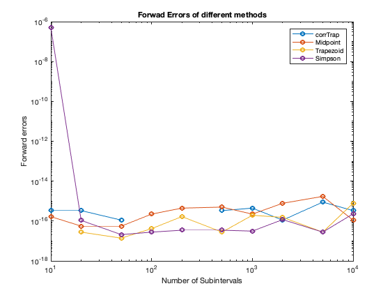

% ========================================================================= % AUTHOR ..... Lishan Huang % DATE .... March 18 % % Comparing different Numerical Integration %
The method function of corrected trapezoidal rule corrTrap.m include>corrTrap.m</include =========================================================================
%problem 1 script close all clear all %create a vector to store the number of subintervals to be evaluated num = [10, 20, 50, 100, 200, 500, 1000, 2000, 5000, 10000]; %define the Bessel function with different n value f = @(t)cos(-sin(t))/pi; f1 = @(t)cos(t - sin(t))/pi; f2 = @(t)cos(2*t - sin(t))/pi; f3 = @(t)cos(3*t - sin(t))/pi; %the size of f(a)' and f(b)' dfa = 0; dfb = 0; %left endpoint and right endpoint a = 0; b = pi; %create a 4* length(num) matrix to store error for different method Error=zeros(4,length(num)); for i = 1:length(num) %first row of Error stores the error of the corrected trapezoidal rule Error(1,i) = abs(corrTrap(f,a,b,num(i), dfa, dfb)-besselj(0,1)); %sencond row of Error stores the error of the composite midpoint rule Error(2,i) = abs(midpointRule(f1,a, b, num(i))-besselj(1,1)); %sencond row of Error stores the error of the composite trapezoidal rule Error(3,i) = abs(trapezoidRule(f2,a, b, num(i))-besselj(2,1)); %sencond row of Error stores the error of the Simpson?s rule Error(4,i) = abs(simpsonsRule(f3,a, b, num(i))-besselj(3,1)); end %plot the error loglog(num, Error(1,:),'o-', num, Error(2,:), 'o-', num, Error(3,:), 'o-', num, Error(4,:), 'o-') xlabel('Number of Subintervals'); ylabel('Forward errors'); legend("corrTrap","Midpoint","Trapezoid","Simpson") title("Forwad Errors of different methods")
%1:trapezoidal rule ,midpoint rule,corrected trapezoidal rule.4: Simpson?s rule